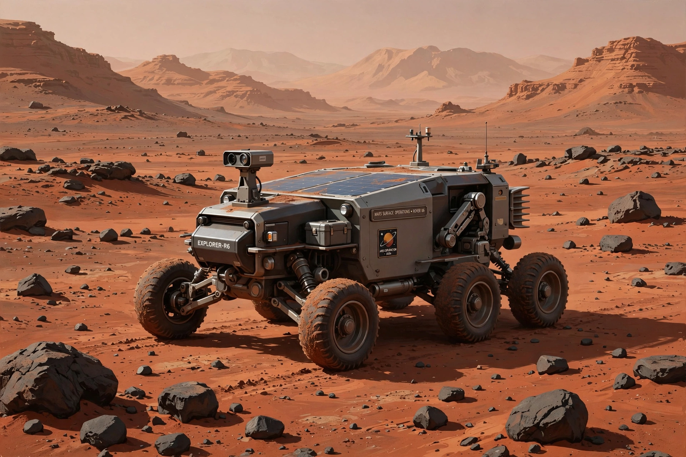

Opportunity (rover)
From Wikipedia, the free encyclopedia
| Opportunity (rover) | |
|---|---|
| Operator | NASA / JPL |
| Launch | 7 July 2003 |
| Landing | 25 January 2004, Meridiani Planum |
| Mission length | 14 years (planned 90 days) |

Opportunity at Meridiani (artist's concept).Opportunity, formally Mars Exploration Rover-B (MER-B), was a robotic rover that explored Mars from 2004 to 2018 — outliving its 90-day design life by nearly 15 years and setting an off-world driving record of 45.16 km. With its twin Spirit, it was tasked to find evidence that liquid water once existed on Mars, and it found that evidence almost immediately.
Landing inside a small crater at Meridiani Planum, Opportunity's first images showed bedrock outcrop — the first sedimentary rock found on Mars — studded with iron-rich spherules ("blueberries") formed in water. It went on to explore ever-larger craters (Endurance, Victoria, and the giant Endeavour, reached in 2011), finding clays and veins of gypsum that confirmed a watery, and for a time possibly habitable, past.
End of mission
In June 2018 a planet-encircling dust storm starved Opportunity of sunlight; its last message, as paraphrased by engineers, amounted to "my battery is low and it's getting dark". NASA declared the mission over on 13 February 2019 after more than a thousand attempts to wake it. The rover's longevity — through winters it survived by parking on sun-facing slopes — remains a benchmark beaten only by its successors' ambitions.
See also
Spirit (rover) · Curiosity (rover) · Perseverance (rover) · Mars